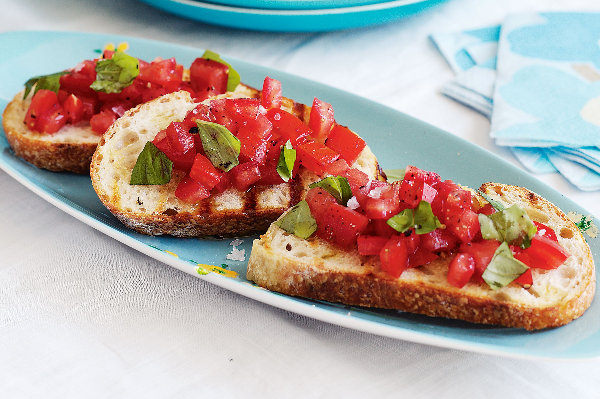

Bruschetta

Description
A classic Italian appetizer,this Bruschetta with Tomato and Basil.
Ingerdiants
- 4 slices of crusty bread
- 2 ripes tomatoes,diced
- 2 tbsp extra virgin olive oil
- 1 gralic clove, healved
- Salt and pepper to taste
Instructions
- Toast the bread: grill or toast the bread slices until golden and crispy.
- Prepare the Topping In a bowl, mix diced tomatoes, ilive oil, basil, salt, and pepper.
- Rub with Gralic:While the bread is sill warm, rub each slice with the cut side of a gralic clove
- Assemble:Spoon the tomato mixture onto the toasted bread.Drizzle with extra olive oil if desired.
- Serve Immediately and enjoy fresh,simple dish!